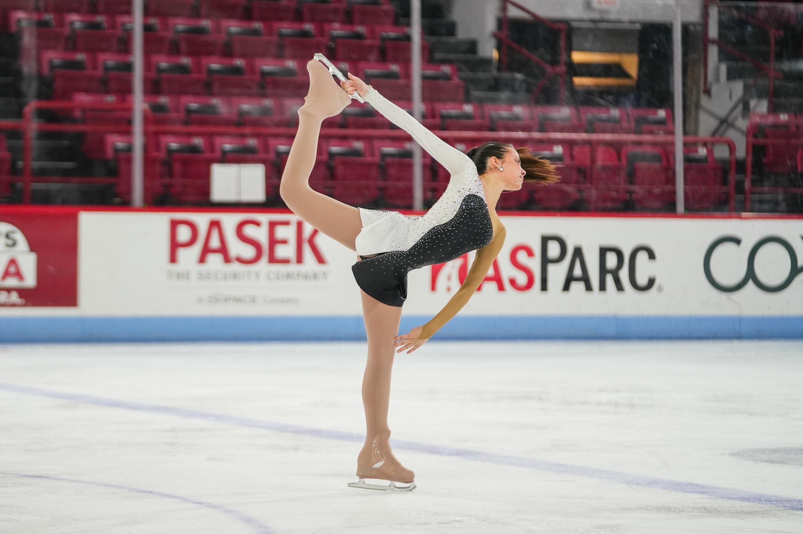

My Experience

My figure skating journey started when I was living in Virginia, but it wasn't until my family moved to Mexico City that I really began taking the sport seriously. What started as a hobby quickly became a huge part of my daily life. I would skate five days a week, typically spending around six hours at the rink each day. My training went far beyond skating lessons. I also took dance classes, participated in cardio training both on and off the ice, and spent time stretching to improve my flexibility and performance. During those years, I had the opportunity to travel throughout Mexico to participate in different skating competitions. Competing pushed me outside my comfort zone and taught me a lot about discipline, perseverance, and handling pressure. However, as much as I loved skating, the demanding training schedule eventually led to burnout. After living in Mexico for six years, my family moved to Miami in 2020, during COVID. With all the stress the sport had been causing me, I decided it was time to step away and quit. After about a year, I realized how much I missed being on the ice. I decided to return to skating, but this time with a completely different mindset. Instead of treating it as a demanding commitment, I wanted to enjoy it on my own terms and make it a hobby again. Today, I still skate and am part of the Northeastern Figure Skating Club! Looking back, my relationship with the sport has changed tremendously, but my love for it has never gone away. Go follow **@nu_figureskating** on Instagram!
What Figure Skating Has Taught Me
- Discipline and consistency
- Time management
- Perseverance
- Confidence
- Resilience
My Training Visualization
Explore how I spend my training time.